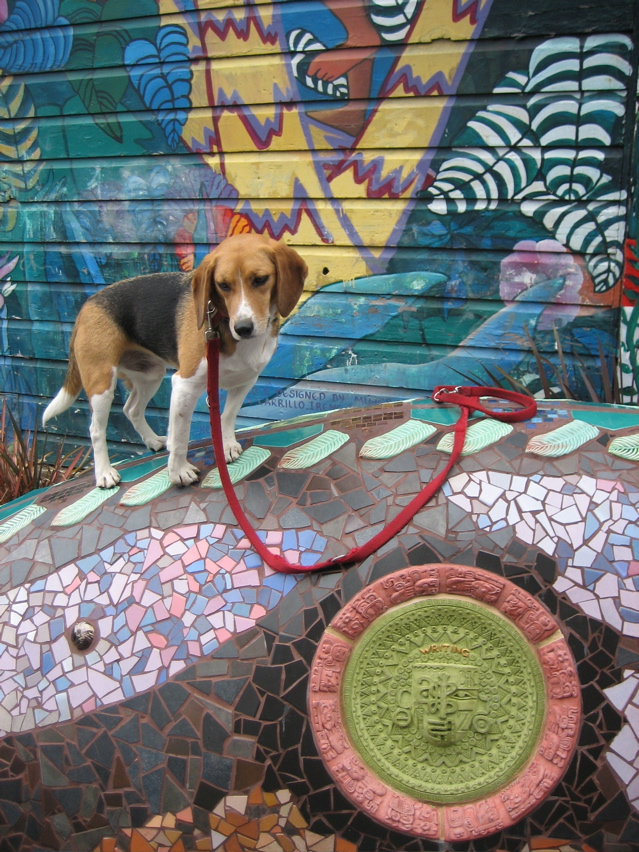

<--Previous Up Next-->

Writing
Huxley contemplates writing, one of the gifts given to mankind by the feathered serpent god Quetzalcoatl. Hux and Quetzalcoatl are in the mini-park at 24th and York. This was taken on on a Sierra Club hike visiting the mosaics of the Mission, Bernal Heights and Potrero Hill. Let's see what else Hux found ...